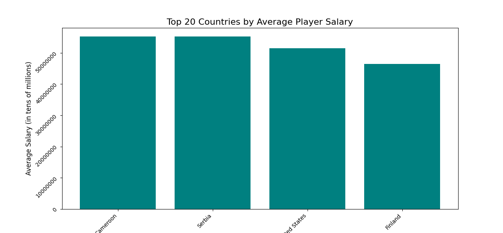

This project scrapes NBA player nationalities and salary from multiple websites, combining the datasets, and displays the average player salary by country.
This project uses Python and Selenium to navigate webpages, extract the data, and store it in JSON. Afterwards, it displays the info using Matplotlib.

This shows the countries that, on average, have the highest paid players.